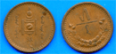
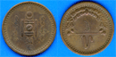
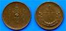
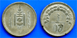
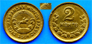
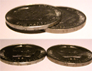
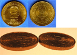
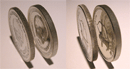
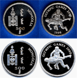
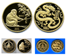

ERROR COINS When a coin mold or banknote plate is first designed sometimes an error occurs. This happens more with coins than paper banknotes. A coin mold gets designed with incorrect molding and that creates coins with minting errors. Although there are quite a few Mongolian coins and banknotes that are minted/issued with errors, in this section I’ve described only some of them. If you find any other coins with minting errors not posted on my website please send them to me. I’ll gladly add them to this list. |
АЛДААТАЙ МӨНГӨ Цаасан ба зоосон мөнгөний эх бэлтгэх болон үйлдвэрлэх явцад зарим алдаа гарах тохиолдол цөөнгүй байна. Ялангуяа зоосон мөнгө үйлдвэрлэх явцад гарсан техникийн алдаанаас болж алдаатай мөнгө их гардаг. Монголын мөнгөн дэвсгэрт, зоосон мөнгөнд ч нилээд алдаатай мөнгө илэрдэг боловч би энд өөрт олдсон цөөн тооны мөнгөний тухай мэдээлэл байршууллаа. Үзэгч та бүхэн монголын алдаатай мөнгөний талаар бодитой өөр бусад баримт мэдээлэл олж надад ирүүлбэл би талархан хүлээн авч вэбсайтдаа байршуулна. Энэ хэсгийн мэдээлэл цаашдаа нилээн өргөжиж баяжигдах байх хэмээн найдаж байна. |
|  | On the reverse of this coin there is a Mongolian National Symbol ?Soyombo? facing upwards. However, in some instances due to the minting error the ?Soyombo? is not centered or even faces downwards. On this particular coin the ?Soyombo? has been minted 5 degrees to the left of the center. 001NEC0010 |
|  | 1925. 5 cent coin. Copper. On the reverse of this coin there is a Mongolian National Symbol ?Soyombo? facing upwards. However, in some instances due to the minting error the ?Soyombo? is not centered or even faces downwards. On this particular coin the ?Soyombo? faces downwards. 001NEC0020 |
|  | 1925. 5 cent coin. Copper. On the obverse of this coin ?Mongolian People?s Republic? is written in Mongolian. However, the letter ?M? is misspelled in the word ?nairamdah?. 001NEC0030 |
|  | 1925. 20 cent coin. 500 silver. On the reverse of this coin there is a Mongolian National Symbol ?Soyombo? facing upwards. On this particular coin the ?Soyombo? faces downwards due to the minting error. 001NEC0040 |
|  | 1935. 2 cent coin. On this coin the line where the arrow is pointing should be a solid one. However, on this particular one the line is broken out. 001NEC0050 |
|  | 1981. 50 cent coin. These two coins on the image are the same; however, the one on the right is thicker than the one on the left. In other words the width and hence the weight of these coins are different. 001NEC0060 |
|  | 1984. 1 tugrik coin. On the side of this coin there are numbers representing years 1924-1984. However, on the error coin these numbers are omitted. 001NEC0070 |
|  | 1984 10 tugriks. Olympic Games. Archery. These two coins are also the same ones. However, the width of these coins is different and so is the size of the cuts on the sides of the coins. The coin on the left weighs 28.1g, the one on the right weighs 29.0g. 001NEC0080 |
|  | 1998. Olympic Games. Wrestling. The year 1998 is omitted on one of these otherwise identical coins. 001NEC0090 |
|  | 2004. 2500 tugriks.1/4oz. 999.9 Gold. Year of the Monkey. This is a peculiar Mongolian gold coin minted in error. On the obverse side of this 2004 Year of the Monkey 1/4 oz gold coin there should have been an official emblem of the Mongol Bank. But duethe minting error at the factory a face of the 2000 Year of the Dragon gold coin is minted on that Monkey coin instead. This is the only case of such minting error reported so far. The coin is minted by German Mayer Minted and comes with its originalbox and Year of the Monkey coin certificate. Below please find some sample images of both Year of the Monkey and Year of the Dragon coins the way they should be. Based on this you can easily detect the minting mishaps on the coin. 001NEC0100 |

{kind=link}
{kind=link}
{kind=link}
{kind=link}
{kind=link}
{kind=link}
{kind=link}
{kind=link}
{kind=link}
{kind=link}